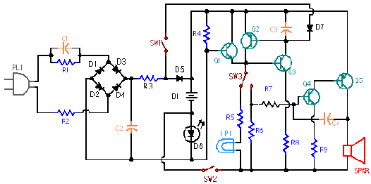

Diagramming using blocks and connectors
The block and connector diagramming tools assist you in developing electrical, P&ID, and other diagrams. Solid Edge provides a library of industry-standard 2D blocks and access to all of your AutoCAD blocks through on-the-fly conversion. Intelligent connectors quickly snap to keypoints on the blocks and create associative links that are easily updated.

With convenient access to block libraries and functionality via the Library window, a block can be selected and placed in the active document with different representations, or views, without the overhead of duplicated graphics and data. When a design changes, you can easily replace or delete all occurrences of a block with one command. You can reference property text in block labels, which in turn can be cross-referenced in annotations such as callouts.
You create and arrange the blocks on the drawing first using the Block command, and then add the connectors using the Connectors command.